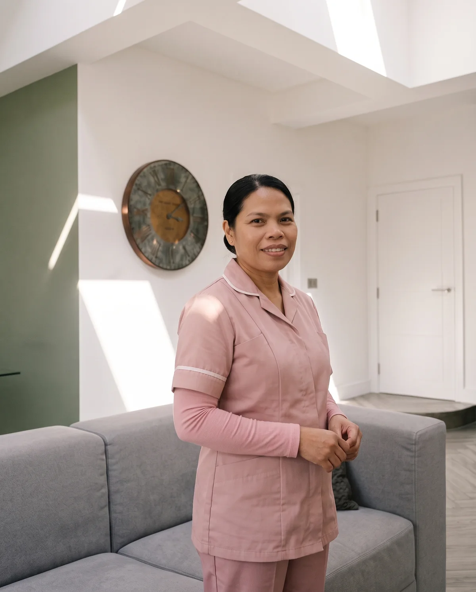

Who Comes Into Your Home
A dedicated postpartum specialist
Chosen with care
- Enhanced DBS checked
- Trained in postpartum recovery
- Infant first aid qualified
What It Is Like To Have Her In Your Home
Every specialist at The Postpartum Suite has extensive experience in caring for mothers and newborns and is trained in our approach to recovery, from treatments and binding to the preparation of postpartum meals.
-
One specialist, yours alone
On live in programmes, your specialist is reserved for your family alone for the whole stay. You will know who is arriving before your stay begins, and you will have the same specialist throughout.
-
Her hours
Your specialist cares for you and your baby from 7am to 7pm, including a break during the day that is timed around you and your baby. Care continues at weekends according to your agreed schedule.
-
Where she stays
With live in care, your specialist stays in your home for the length of your programme. A private room should be available for her. With live out care, she stays nearby and arrives each morning at 7am. We recommend live in care, as your specialist becomes a natural part of your household and its rhythm.
-
If anything changes
If your specialist becomes unwell, we arrange another fully trained specialist to continue your care, and we contact you promptly to confirm the arrangements.

Your specialist takes time to understand your home, your routine and the kind of support you want. You will know who is arriving before your stay begins.
Before Anyone Joins Us
Before anyone joins us, they go through an enhanced DBS check, reference checks and an interview process. All of our specialists are fully insured and hold infant first aid and safeguarding training.
- Enhanced DBS check
- Reference checks
- Interview process
- Fully insured
- Infant first aid
- Safeguarding training
Our Specialists
Who are your specialists?
Our specialists are experienced in postpartum care, postpartum treatments, traditional confinement care, feeding support and newborn care. Each has extensive experience and takes great pride in her work. Every specialist is carefully selected for her experience, qualifications and suitability, and all work to the standards of care and service set by The Postpartum Suite.
How does 24 hour care work?
Where 24 hour care has been arranged, support follows an agreed rota that gives your specialist appropriate rest while making sure care is available throughout. We agree the arrangement with you before your programme begins.
Can I extend my programme after it has started?
Yes, subject to availability. This includes moving from a 14 day programme to 30 days or longer. We recommend letting us know as early as possible. We always aim to keep the same specialist with you, but we cannot guarantee her availability for an extended period.